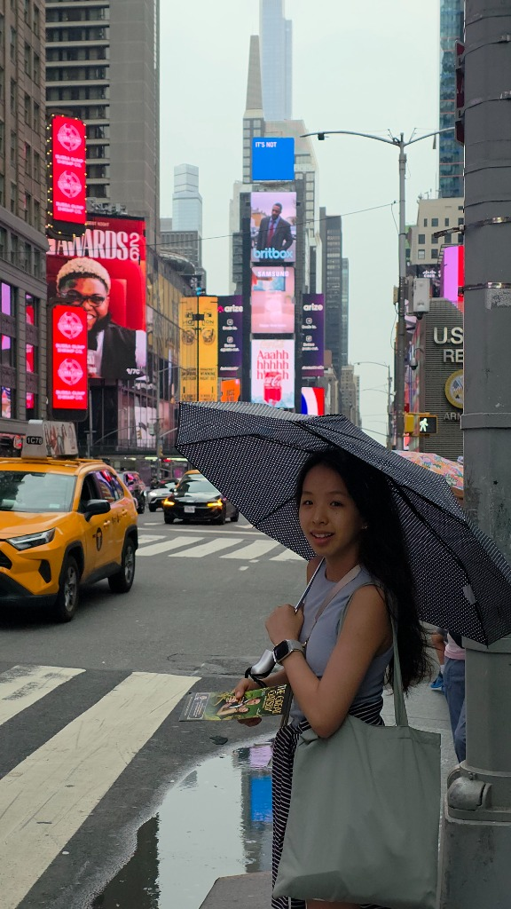
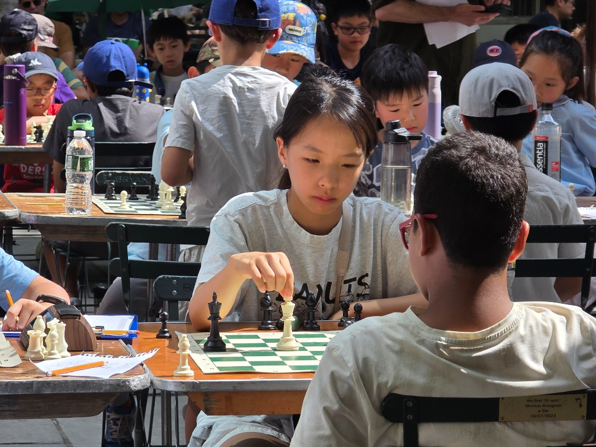
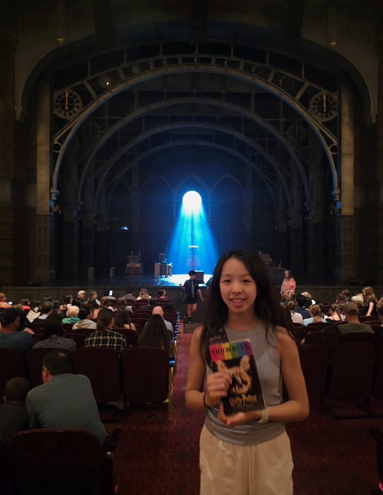
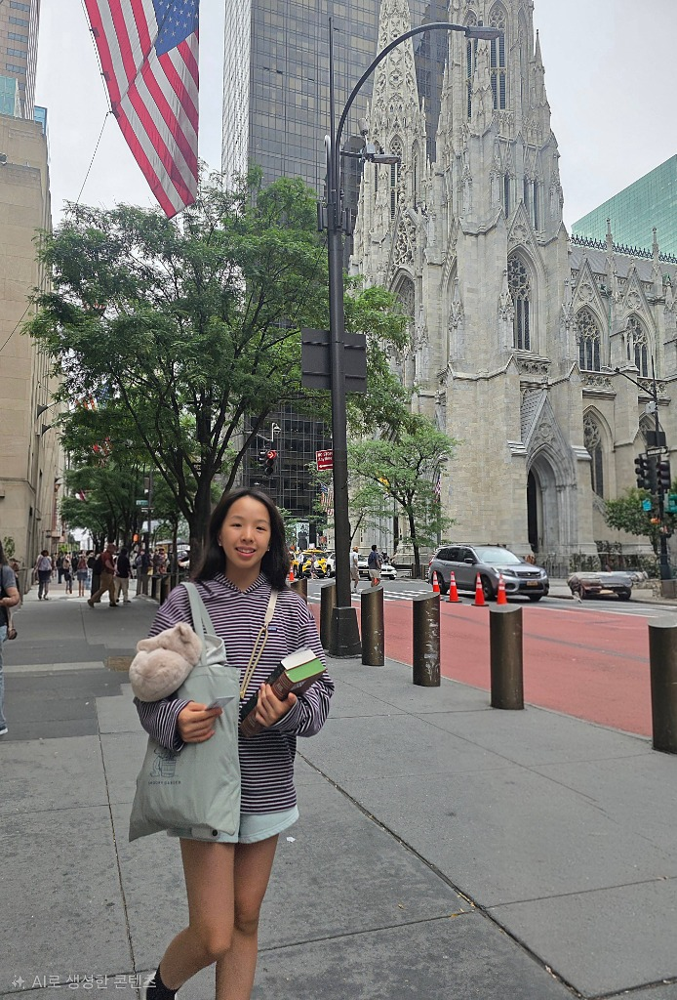
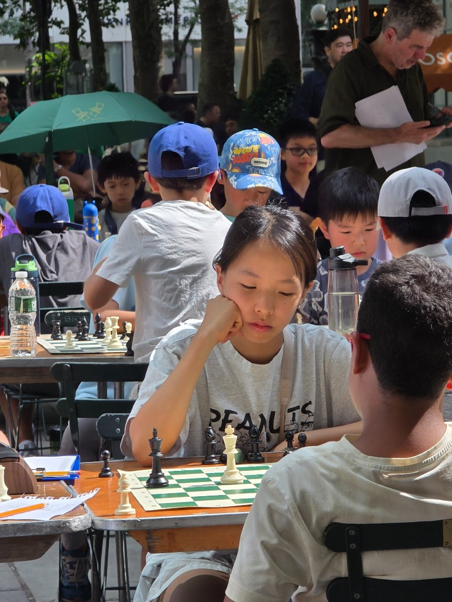
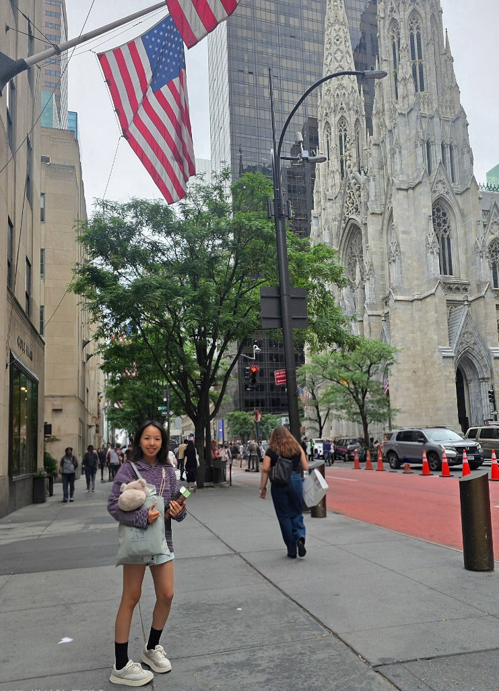
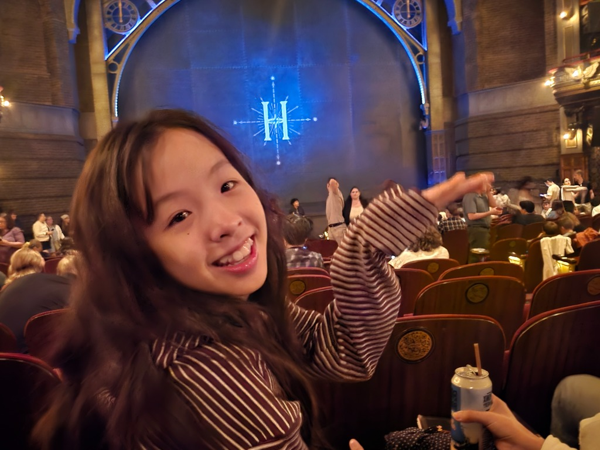

수아의 꿈꾸는
미니 홈피에 오신걸 환영해요!
안녕하세요! 중학교 1학년이 된 수아의 개인 홈페이지입니다. 좋아하는 음악, 매일 그리는 그림, 그리고 소소한 학교 일기들을 기록하는 소중한 공간이에요. 🌸

All About Suah
새싹 가득한 중학교 1학년, 나를 소개합니다!
수아 (Suah)
중1 감성 다이어리 꾸미기 장인
독서와 기타 연주, 그리고 다꾸용 귀여운 스티커 모으기가 취미예요! 중학생이 되어 매일 새로운 세상을 만나는 중입니다. ✨
My Favorite Thing
-
책 읽기 (독서)
판타지 소설부터 시집까지, 책 속의 다양한 세상을 탐험하는 시간을 좋아해요.
-
다이어리 꾸미기 (다꾸)
다양한 스티커와 마스킹 테이프, 그리고 귀여운 캐릭터 소품들로 하루 일상을 아기자기하게 꾸미는 다꾸(다이어리 꾸미기) 시간을 무척 아끼고 좋아해요!
-
기타 연주
기타 코드를 짚으며 좋아하는 음악들을 뚱땅뚱땅 자유롭게 부르고 연주할 때 스트레스가 사르르 풀려요.
My Diary
수아의 소소한 중학교 생활과 생각들을 나누는 공간이에요. 🎨
새 일기 작성하기
드디어 시험 끝! 😆
친구들이랑 다 같이 떡볶이 먹고 코인 노래방에서 목청껏 부른 행복했던 날!
소품샵 털고 온 날 💸
새로 나온 고양이 캐릭터 스티커랑 투명 다이어리 커버 득템! 다꾸 열정 충전 완료.
중학교 첫 동아리 시간!
인기 동아리인 도서감상반에 가입 완료! 좋은 소설 많이 읽어야지.
햇살 좋은 날, 공원에서 독서 🌳
주말에 집 앞 호수공원 벤치에 앉아서 책을 읽었어요. 시원한 바람도 불고 새 소리도 들려서 시간 가는 줄 몰랐네요!

비 오는 뉴욕 타임스퀘어 🗽
비가 보슬보슬 내리는 타임스퀘어 한복판에서 노란 택시들을 배경으로 찰칵! 반짝이는 불빛들이 정말 멋진 도시였어요.

체스 대회, 초집중 모드! 🏆
두근두근 긴장되는 체스 대회 날! 한 수 한 수 신중하게 생각하느라 머리가 아팠지만 집중하는 재미가 정말 쏠쏠했답니다.

브로드웨이 해리포터 연극 ⚡
뉴욕에서 해리포터 연극을 관람한 날! 무대 특수효과와 조명이 정말 마법처럼 신기해서 눈을 뗄 수 없었어요. 팜플렛을 꼭 쥐고 한 컷!

뉴욕 세인트 패트릭 대성당 ⛪
뉴욕 한복판에 있는 웅장하고 아름다운 세인트 패트릭 대성당 앞에서! 높이 솟은 고딕 양식 건축물이 정말 멋져서 넋을 잃고 감상했어요.

체스 경기 중 묘수 찾기 ♟️
상대방의 노림수를 피하면서 이길 수 있는 기발한 묘수를 짜내느라 집중했던 대국 시간!

성당 앞에서 찰칵! 📸
웅장한 성당 앞 뉴욕 스트리트에서 전신 샷! 빌딩 숲과 고풍스러운 성당의 조합이 정말 멋져요.

공연 시작 전 기대 가득! 😍
해리포터 무대 시작 전! 신비로운 파란 조명의 극장 안에서 기대감에 가득 찬 신나는 한 컷.
호수 근처에서 힐링 타임 🍃
싱그러운 나무 그늘 벤치에 걸터앉아 독서를 즐기며 잔잔한 호수를 바라본 고요한 시간.
Photo Album
소중한 순간들의 사진과 제목을 따로 모아두는 수아의 독립 사진첩이에요. 📷
새 사진 올리기
친구들의 흔적 남기기 🐾
수아 미니홈피에 들러준 흔적을 방명록으로 예쁘게 남겨주세요!
도착한 메시지 (2)
헐 수아 홈페이지 완전 부러워! 엄청 이쁘다!!! 나 내일 학교 갈 때 다꾸 스티커 빌려줘 ㅋㅋㅋ
수아야 중학교 생활 적응도 잘하고 기특하네! 시험 보느라 수고 많았구 맛있는 거 먹으러 가자~